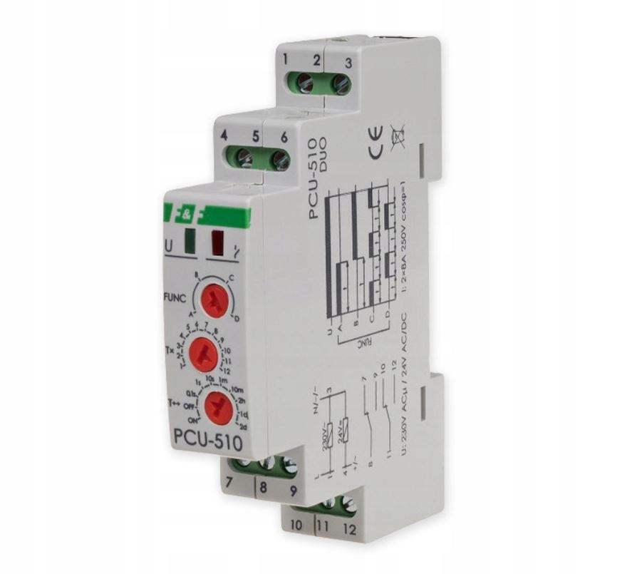
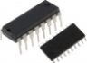

Przekaźniki
Urządzenie elektryczne lub elektroniczne zaprojektowane do wywołania ustalonej nagłej zmiany stanu w jednym lub więcej obwodach wyjściowych przy spełnieniu odpowiednich warunków wejściowych.
Przekaźnik reaguje na zmianę pewnej wejściowej wielkości fizycznej (na przykład napięcia, natężenia prądu, ciśnienia płynu, temperatury) w taki sposób, że po przekroczeniu pewnej jej wartości sygnał wyjściowy zmienia się skokowo (z reguły z włącz na wyłącz albo odwrotnie).
W ofercie posiadamy przekaźniki elektromagnetyczne, półprzewodnikowe , instalacyjne.

Układy scalone
Zminiaturyzowany układ elektroniczny zawierający w swym wnętrzu od kilku do setek milionów podstawowych elementów elektronicznych, takich jak tranzystory, diody, rezystory, kondensatory połączonych w pewną całość funkcjonalną.
W ofercie posiadamy mikrokontrolery , interfejsy , drivery, przetworniki.